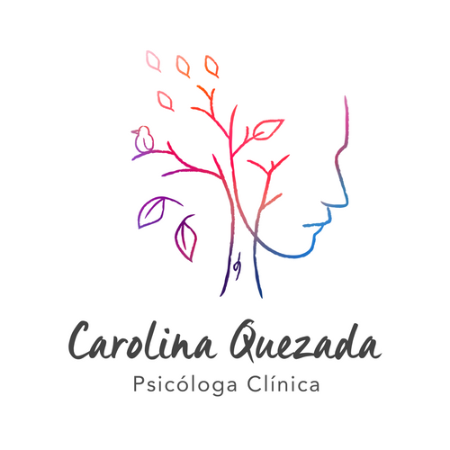
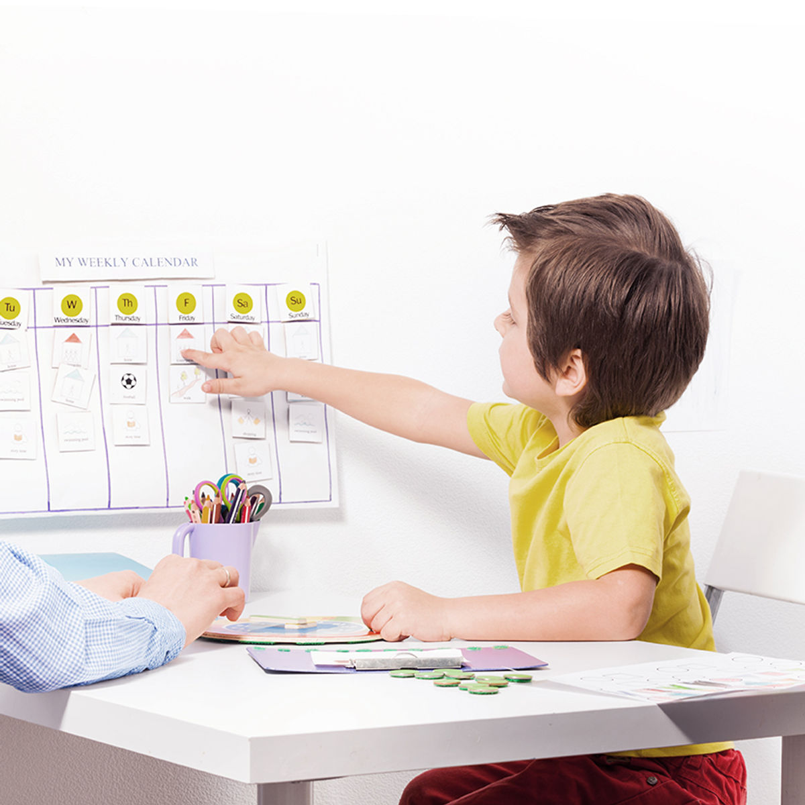

Carolina QuezadaSoy Carolina Quezada, psicóloga clínica. Te acompaño en un proceso de crecimiento y autodescubrimiento, a tu ritmo y sin juicios.
Agenda por WhatsAppSean cuales sean tus inquietudes, estoy aquí para ofrecerte mi apoyo. Con mis herramientas y experiencia profesional, trabajamos para que las cosas vuelvan a su lugar, animando una visión positiva de la vida y nuevas actitudes y reacciones.
Acudir a terapia te puede convertir en una persona más fuerte emocionalmente y darte herramientas para adaptarte mejor a las situaciones difíciles de la vida.

Escríbeme y coordinamos tu primera sesión.